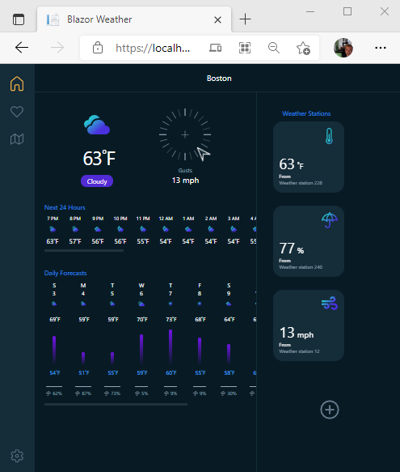

This article overviews Single Page Applications
SPA and UI architectures featuring MVU.
Then ventures to Microsoft's .NET Core, Blazor
and MAUI
| Tradeoffs | SPA | MPA |
|---|---|---|
| Payload | Slower larger app | Faster smaller app |
| Speed | Faster pages render at client | Slower pages render on server |
| Bandwidth | Less pages already at client | More pages retrieved from server |
| Server Resources | Less page processing at client | More page processing at server |
| Caching | Less cache hits due to one request | More cache hits due to many requests |
| UX | Best easy to build intuitive UI | Worst onerous page navigation |
| SEO | Difficult for bots | Built In for bots |
Model View ViewModel (MVVM) UI architecture pattern was created early 2000's by Microsoft.
Classic ASP (non-SPA) was first released by Microsoft in early 2002 uses server generated MVU.
Windows Presentation Foundation (WPF), released in late 2006, built on MVVM.
Microsoft released Silverlight (now defunct), in late 2006, built on MVVM.
React ES6 released in 2015 by Facebook, is based on MVU.
Angular ES6 release by Google mid 2016, is based on MVVM.
Blazor, released in 2018 by Microsoft, is MVVM running in WebAssemply.
Blazor Maui, realeased in late 2021 by Microsoft uses MVVM and/or MVU (discussed next section).
Notice a RegisterViewModel.Password transformation is requried for IdentityUser.PasswordHash .
Public Class IdentityUser(Of TKey, TLogin As IdentityUserLogin(Of TKey),
TRole As IdentityUserRole(Of TKey), TClaim As IdentityUserClaim(Of TKey))
Implements IUser(Of TKey)
'
' Summary:
' Email
'''''''''''''''''''''''''''''''''''''''''''
Public Overridable Property Email As String
'''''''''''''''''''''''''''''''''''''''''''
'
' Summary:
' True if the email is confirmed, default is false
Public Overridable Property EmailConfirmed As Boolean
'
' Summary:
' The salted/hashed form of the user password
''''''''''''''''''''''''''''''''''''''''''''''''''
Public Overridable Property PasswordHash As String
''''''''''''''''''''''''''''''''''''''''''''''''''
'
' Summary:
' A random value that should change whenever a users credentials have changed (password
' changed, login removed)
Public Overridable Property SecurityStamp As String
'
' Summary:
' PhoneNumber for the user
Public Overridable Property PhoneNumber As String
'
' Summary:
' Navigation property for user roles
Public Overridable ReadOnly Property Roles As ICollection(Of TRole)
'
' Summary:
' Navigation property for user claims
Public Overridable ReadOnly Property Claims As ICollection(Of TClaim)
'
' Summary:
' User ID (Primary Key)
Public Overridable Property Id As TKey
'
' Summary:
' User name
Public Overridable Property UserName As String
End Class
End Namespace
@ModelType RegisterViewModel
@Code
ViewBag.Title = "Register"
End Code
<h2>@ViewBag.Title New Account</h2>
@Using Html.BeginForm("Register", "Account", FormMethod.Post, New With {.class = "form-horizontal", .role = "form"})
@Html.AntiForgeryToken()
@<text>
<hr />
@Html.ValidationSummary("", New With {.class = "text-danger"})
<div class="form-group">
@Html.LabelFor(Function(m) m.Email, New With {.class = "col-md-2 control-label"})
<div class="col-md-10">
@Html.TextBoxFor(Function(m) m.Email, New With {.class = "form-control"})
</div>
</div>
<div class="form-group">
@Html.LabelFor(Function(m) m.Password, New With {.class = "col-md-2 control-label"})
<div class="col-md-10">
@Html.PasswordFor(Function(m) m.Password, New With {.class = "form-control"})
</div>
</div>
<div class="form-group">
@Html.LabelFor(Function(m) m.ConfirmPassword, New With {.class = "col-md-2 control-label"})
<div class="col-md-10">
@Html.PasswordFor(Function(m) m.ConfirmPassword, New With {.class = "form-control"})
</div>
</div>
<div class="form-group">
<div class="col-md-offset-2 col-md-10">
<input type="submit" class="btn btn-default" value="Register" />
</div>
</div>
</text>
End Using
Public Class RegisterViewModel
<Required>
<EmailAddress>
<Display(Name:="Email")>
Public Property Email As String
<Required>
<StringLength(100, ErrorMessage:="The {0} must be at least {2} characters long.", MinimumLength:=6)>
<DataType(DataType.Password)>
<Display(Name:="Password")>
Public Property Password As String
<DataType(DataType.Password)>
<Display(Name:="Confirm password")>
<Compare("Password", ErrorMessage:="The password and confirmation password do not match.")>
Public Property ConfirmPassword As String
End Class
Summary
SPA overview with architecture patterns are explained by example.
Next section talks about a selection of todays popular SPA development platforms.

This section explores popular SPA platforms React,
Angular and
Blazor.
Each example looks at Visual Studio's SPA template generated Counter component.
React is a UI component-based JavaScript library. Applications are developed using an unidirectional data flow architecture MVU. Lifecycle class methods such as render() write pseudo CSS/HTML to the virtual DOM.
Below is a React Counter component implementation.
View and Model are expressed in Counter JavaScript class.
import React, { Component } from 'react';
export class Counter extends Component {
static displayName = Counter.name;
constructor(props) {
super(props);
this.state = { currentCount: 0 };
this.incrementCounter = this.incrementCounter.bind(this);
}
incrementCounter() {
this.setState({
currentCount: this.state.currentCount + 1
});
}
render() {
return (
<div>
<h1>Counter</h1>
<p>This is a simple example of a React component.</p>
<p aria-live="polite">Current count: <strong>{this.state.currentCount}</strong></p>
<button className="btn btn-primary" onClick={this.incrementCounter}>Increment</button>
</div>
);
}
}
Angular is a UI component based TypeScript framework. Applications are developed using an bidirectional data flow architecture MVVM. View elements are bound to ViewModel state.
Below is an Angular Counter component implementation.
Component View is expressed in HTML.
<h1>Counter</h1>
<p>This is a simple example of an Angular component.</p>
<p aria-live="polite">Current count: <strong>{{ currentCount }}</strong></p>
<button class="btn btn-primary" (click)="incrementCounter()">Increment</button>
Component ViewModel is expressed in TypeScript class.
import { Component } from '@angular/core';
@Component({
selector: 'app-counter-component',
templateUrl: './counter.component.html'
})
export class CounterComponent {
public currentCount = 0;
public incrementCounter() {
this.currentCount++;
}
}
Blazor is a .NET framework for building SPA applications.
Devloper programs client code in C# which compiles to
WebAssembly.
Applications are developed using MVVM or MVU in MAUI.
Below is a Blazor Counter component MVVM implementation.

Component View is expressed in HTML.
@page "/counter"
<PageTitle>Counter</PageTitle>
<h1>Counter</h1>
<p role="status">Current count: @currentCount</p>
<button class="btn btn-primary" @onclick="IncrementCount">Click me</button>
Component ViewModel is expressed in C# embedded code.
@code {
private int currentCount = 0;
private void IncrementCount()
{
currentCount++;
}
}
Blazor MAUI counter coded MVU style
Code snippet taken from Scott's blog article.
readonly State<int> count = 0;
[Body]
View body() => new StackLayout
{
new Label("Welcome to .NET MAUI!"),
new Button(
() => $"You clicked {count} times.",
() => count.Value ++)
)
};
Summary
So far, the discussion samples popular SPA technologies and architecture.
All typically use AJAX to communicate with back-end business systems.
Blazor supports a strong communication with server using SignalR.
The next section overviews .NET Core Blazor ecosystem.
Blazor builds web client side functionality using C#.
C# compiles down to WebAssembly (Wasm) consumable by modern browsers (not IE).
See Microsoft's Blazor JavaScript interoperability.
for more infromation.
Wasm can be exceuted by browser but cannot communicate to the browser directly.
Blazor provides communication with browser by interop to and from Wasm.
The .NET Core Blazor hosting models feature:
A web client communicates to a server by AJAX.
Including Traditional web sites, Angular and React
Blazor Client communicates to a server by AJAX from JavaScript layer.
Or Blazor JS Interop AJAX style from the WebAssembly layer.
In addition, a Blazor Server web client can communicate using SignalR.
An alternative to WEBAPI.
SignalR is a pooled WebSocket RPC connection to.NET Core server.
Client code sample that sends a SignalR message to the server.
async Task Send() =>
await hubConnection.SendAsync("SendMessage", userInput, messageInput);
Server code sample that sends a SignalR message to all clients.
public async Task SendMessage(string user, string message)
{
await Clients.All.SendAsync("ReceiveMessage", user, message);
}
Client code sample that recieves a SignalR message from the server.
hubConnection = new HubConnectionBuilder()
.WithUrl(NavigationManager.ToAbsoluteUri("/chathub"))
.Build();
hubConnection.On<string, string>("ReceiveMessage", (user, message) =>
{
var encodedMsg = $"{user}: {message}";
messages.Add(encodedMsg);
StateHasChanged();
});
Summary
This section overviews Blazor hosting models, interop and communication options.
Next section explores Blazor MAUI.
.NET MAUI
(Multi-platform App UI) is the next version of Xamarin featuring Blazor WebView.
Xamarin is a cross-platform framework for creating native mobile and desktop apps with C# and XAML.
BlazorWeather is a Microsoft Blazor Maui example.

BlazorWeather solution coded using MVU.
BlazorWeather project > Pages/AppState.cs is the Model
namespace BlazorWeather
{
public class AppState
{
public Location CurrentLocation { get; set; }
public WeatherResponse Weather { get; set; }
public string UnitOption { get; set; } = "imperial";
public IList<Location> FavoriteLocations { get; set; }
}
}
BlazorWeather project > Pages/Home/Home.razor shows View markup for Mobile and Desktop.
<!-- Mobile -->
<div class="md:hidden overflow-x-hidden">
<!-- Heading -->
<div class="mt-14 px-6 pb-2 relative">
<h3 class="text-2xl mb-5 relative z-10">@AppState.CurrentLocation.Name</h3>
<p class="text-7xl tracking-tighter mb-5">@DH.DisplayCurrentTemp()</p>
<span class="rounded-full px-4 py-1" style="background: var(--primary-dotnet)">@AppState.Weather.CurrentWeather.Phrase</span>
<img class="absolute top-0 -right-8 w-52 z-0" src="@AppState.Weather.CurrentWeather.GetIconUrl()" />
</div>
<!-- Rainfall, wind, etc. -->
<div class="px-6 mt-9 flex items-center">
<svg width="18" height="18" viewBox="0 0 18 18" fill="none" xmlns="http://www.w3.org/2000/svg"><path d="M17.99 8.89071C17.6287 6.88427 16.6142 5.05354 15.1045 3.68345C13.5948 2.31337 11.6745 1.48079 9.64252 1.31529V0H8.3568V1.31529C6.32481 1.48079 4.40452 2.31337 2.8948 3.68345C1.38508 5.05354 0.370622 6.88427 0.00930376 8.89071C-0.0115025 9.01168 0.00275608 9.13607 0.0503944 9.24919C0.0980328 9.36231 0.17706 9.45943 0.278135 9.52907C0.37921 9.5987 0.498108 9.63795 0.620777 9.64216C0.743446 9.64638 0.864758 9.61539 0.970375 9.55286C1.4428 9.22457 1.99676 9.03324 2.57109 9C3.11696 9.01322 3.64986 9.16913 4.11677 9.45221C4.58369 9.7353 4.96836 10.1357 5.23252 10.6136C5.29383 10.7037 5.37625 10.7775 5.47261 10.8285C5.56898 10.8795 5.67635 10.9062 5.78538 10.9062C5.8944 10.9062 6.00178 10.8795 6.09814 10.8285C6.1945 10.7775 6.27692 10.7037 6.33823 10.6136C6.55385 10.2351 6.84386 9.90422 7.19077 9.64083C7.53769 9.37744 7.93433 9.18701 8.3568 9.081V15.1071C8.3568 15.5334 8.18748 15.9422 7.88608 16.2436C7.58468 16.545 7.1759 16.7143 6.74966 16.7143C6.32342 16.7143 5.91464 16.545 5.61324 16.2436C5.31184 15.9422 5.14252 15.5334 5.14252 15.1071V14.7857H3.8568V15.1071C3.8568 15.8744 4.16159 16.6102 4.7041 17.1527C5.24662 17.6952 5.98243 18 6.74966 18C7.51689 18 8.2527 17.6952 8.79522 17.1527C9.33774 16.6102 9.64252 15.8744 9.64252 15.1071V9.08036C10.0651 9.18651 10.4618 9.37715 10.8087 9.64076C11.1557 9.90438 11.4456 10.2355 11.6611 10.6142C11.718 10.7101 11.7989 10.7896 11.8958 10.8448C11.9928 10.9 12.1024 10.929 12.2139 10.929C12.3255 10.929 12.4351 10.9 12.532 10.8448C12.629 10.7896 12.7099 10.7101 12.7668 10.6142C13.0309 10.1362 13.4155 9.73569 13.8824 9.45249C14.3494 9.16929 14.8823 9.01329 15.4282 9C16.0026 9.03324 16.5565 9.22457 17.0289 9.55286C17.1346 9.61558 17.256 9.64673 17.3787 9.64261C17.5015 9.63849 17.6206 9.59927 17.7217 9.5296C17.8229 9.45994 17.902 9.36274 17.9497 9.24951C17.9973 9.13628 18.0116 9.01177 17.9907 8.89071H17.99ZM2.57109 7.71429C2.24418 7.71427 1.91891 7.76037 1.60488 7.85121C2.04127 6.63566 2.76555 5.54387 3.7158 4.66919C4.66604 3.79452 5.81397 3.16298 7.06145 2.82857C5.78715 4.47141 5.09799 6.49275 5.1033 8.57186C4.37494 8.01826 3.48595 7.7172 2.57109 7.71429ZM8.99966 7.71429C8.05185 7.71866 7.13321 8.04254 6.39223 8.63357C6.41602 7.20643 6.78309 4.46143 8.99966 2.73471C11.2047 4.45564 11.5769 7.20257 11.6045 8.63164C10.864 8.04185 9.94636 7.71869 8.99966 7.71429ZM15.4282 7.71429C14.5134 7.71701 13.6245 8.01785 12.896 8.57121C12.9013 6.4921 12.2122 4.47076 10.9379 2.82793C12.1854 3.1624 13.3334 3.79403 14.2836 4.66883C15.2339 5.54362 15.9581 6.63554 16.3944 7.85121C16.0804 7.76037 15.7551 7.71427 15.4282 7.71429Z" fill="#3E8EED"/></svg>
<div class="flex-grow pl-2">@DH.DisplayCurrentPrecipationProbability()</div>
<svg width="21" height="18" viewBox="0 0 21 18" fill="none" xmlns="http://www.w3.org/2000/svg"><path d="M6.2967 8.99949H0.64293C0.289319 8.99949 0 9.28881 0 9.64242V10.9283C0 11.2819 0.289319 11.5712 0.64293 11.5712H6.35697C6.99588 11.5712 7.59461 12.0092 7.69909 12.6401C7.83169 13.4437 7.21287 14.1429 6.4293 14.1429C5.86272 14.1429 5.38052 13.7732 5.20774 13.2629C5.12335 13.0098 4.86216 12.8571 4.59695 12.8571H3.27894C2.88515 12.8571 2.5677 13.2107 2.64003 13.5964C2.98561 15.3685 4.55275 16.7147 6.42528 16.7147C8.71974 16.7147 10.5521 14.7015 10.2507 12.3508C10.0056 10.4059 8.25362 8.99949 6.2967 8.99949ZM0.64293 7.71363H14.1445C16.5434 7.71363 18.436 5.5116 17.9136 3.02426C17.6083 1.56963 16.4309 0.392264 14.9763 0.0868724C12.7501 -0.379252 10.753 1.08743 10.3592 3.1207C10.2829 3.50646 10.6043 3.85605 10.9941 3.85605H12.3121C12.5813 3.85605 12.8385 3.70336 12.9229 3.4502C13.0957 2.93988 13.5779 2.57019 14.1445 2.57019C14.924 2.57019 15.5469 3.26938 15.4143 4.07304C15.3098 4.70391 14.7151 5.14191 14.0721 5.14191H0.64293C0.289319 5.14191 0 5.43123 0 5.78484V7.0707C0 7.42431 0.289319 7.71363 0.64293 7.71363ZM16.0733 8.99949H9.79263C10.5682 9.66653 11.1267 10.5586 11.3919 11.5712H16.0733C17.1381 11.5712 18.002 12.4352 18.002 13.5C18.002 14.5649 17.1381 15.4288 16.0733 15.4288C15.354 15.4288 14.7352 15.031 14.4016 14.4483C14.2851 14.2474 14.052 14.1429 13.819 14.1429H12.4608C12.0228 14.1429 11.6973 14.5769 11.846 14.9908C12.5612 17.0241 14.6789 18.3983 17.0457 17.896C18.7012 17.5464 20.0634 16.2244 20.4492 14.5729C21.1363 11.6315 18.9062 8.99949 16.0733 8.99949Z" fill="#3E8EED"/></svg>
<div class="flex-grow pl-2">@DH.DisplayCurrentWindSpeed()</div>
<svg width="13" height="18" viewBox="0 0 13 18" fill="none" xmlns="http://www.w3.org/2000/svg"><path d="M11.8629 7.91477L7.08998 0.314299C7.02073 0.217104 6.92925 0.137868 6.82316 0.0831964C6.71708 0.0285246 6.59947 0 6.48012 0C6.36078 0 6.24317 0.0285246 6.13709 0.0831964C6.031 0.137868 5.93952 0.217104 5.87027 0.314299L1.0757 7.95077C0.409605 9.02522 0.0385681 10.2563 0 11.5199C0 13.2385 0.682725 14.8868 1.89798 16.102C3.11324 17.3173 4.76149 18 6.48012 18C8.19876 18 9.847 17.3173 11.0623 16.102C12.2775 14.8868 12.9602 13.2385 12.9602 11.5199C12.9189 10.2424 12.5403 8.99865 11.8629 7.91477ZM6.48012 16.56C5.14393 16.5583 3.86296 16.0267 2.91813 15.0819C1.9733 14.137 1.44174 12.8561 1.44003 11.5199C1.4783 10.513 1.78074 9.53391 2.317 8.68086L2.99022 7.60804L10.2436 14.8615C9.77254 15.3952 9.19338 15.8227 8.54455 16.1157C7.89571 16.4086 7.19203 16.5603 6.48012 16.5607V16.56Z" fill="#3E8EED"/></svg>
<div class="pl-2">@AppState.Weather.CurrentWeather.RelativeHumidity%</div>
</div>
</div>
<!-- Desktop -->
<div class="desktop hidden md:flex flex-col flex-grow min-h-screen">
<h3 class="text-center text-xl p-5 border-b sticky top-0">@AppState.CurrentLocation.Name</h3>
<div class="grid flex-grow" style="grid-template-columns: 6fr 4fr; grid-auto-rows: 100%">
<!-- Left col -->
<div class="overflow-hidden">
<div class="flex justify-evenly text-center my-10">
<!-- Temperature and summary -->
<div>
<img class="inline-block w-20 mb-4" src="@AppState.Weather.CurrentWeather.GetIconUrl()" />
<p class="text-5xl tracking-tighter mb-6 pl-2">@DH.DisplayCurrentTemp()</p>
<span class="rounded-full px-4 py-1" style="background: var(--primary-dotnet)">@AppState.Weather.CurrentWeather.Phrase</span>
</div>
</div>
</div>
</div>
</div>
BlazorWeather project > Pages/Home/Home.razor contains Update code.
@code {
protected override async Task OnInitializedAsync()
{
if (AppState.CurrentLocation == null)
{
var locations = await WeatherService.GetLocations();
AppState.CurrentLocation = locations.First();
}
AppState.Weather = await WeatherService.GetWeather(AppState.CurrentLocation.Coordinate);
}
}
Summary
Blazor Maui completes the Microsoft's application ecosystems across platforms.
Blazor Maui is not production available at the time of this article.
Release is expected end of 2021 with .NET6 and Visual Studio 2022.
© Copyright 2021 Warren Browne